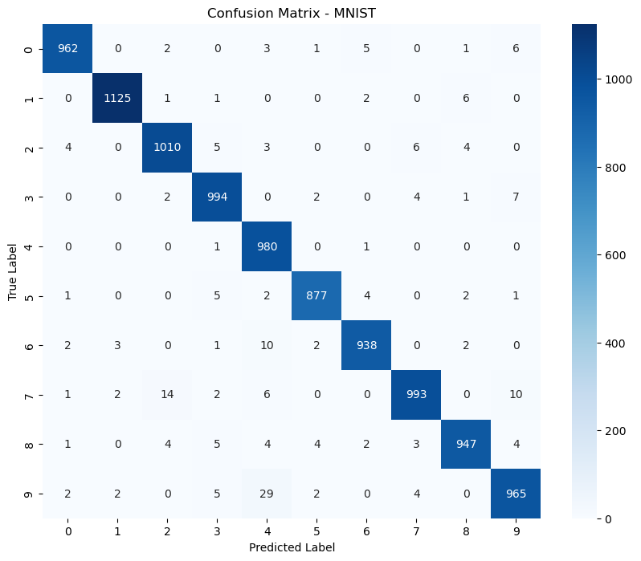

MNIST Digit Classification
Deep Learning Case Study
Designed, trained, and optimized a deep learning model to classify handwritten digits from the MNIST dataset using TensorFlow and Keras. Explored multiple network architectures, callbacks, and optimization techniques, achieving 97.9% test accuracy.
← Back to Portfolio60K
Training Images
10K
Testing Images
10
Classes
97.9%
Test Accuracy
Project Highlights
97.9%
Final test accuracy achieved using a fully connected neural network.
60,000
Training images used to build and evaluate the model.
TensorFlow
Implemented using TensorFlow, Keras, and NumPy.
Project Overview
This project uses the MNIST handwritten digit dataset to train a fully connected neural network. The goal was to explore the complete deep learning workflow, including preprocessing, model design, training, evaluation, and hyperparameter tuning.
Technologies
Workflow
Preprocessing
- Normalized pixel values
- Flattened 28×28 images
- One-hot encoded labels
Model
- Dense (256) + ReLU
- Dense (128) + ReLU
- Softmax output layer
Training
- Adam optimizer
- EarlyStopping
- ModelCheckpoint
- Validation split
Results
The final neural network achieved 97.9% test accuracy with a test loss of 0.077. Performance improvements came from systematically experimenting with network architecture, optimizer settings, validation monitoring, and callbacks such as EarlyStopping and ModelCheckpoint, resulting in a model that generalized well to unseen data.
Project Gallery



Lessons Learned
- Data preprocessing is critical for neural network performance.
- EarlyStopping helps prevent overfitting.
- ModelCheckpoint preserves the best-performing model.
- Hyperparameter tuning improves model generalization.
Key Achievements
- Built and optimized a fully connected neural network for handwritten digit recognition.
- Achieved 97.9% test accuracy on the MNIST test dataset.
- Applied preprocessing, one-hot encoding, model evaluation, and hyperparameter tuning.
- Used EarlyStopping and ModelCheckpoint to improve model generalization.
Future Improvements
- Convolutional Neural Networks (CNNs)
- Data augmentation
- Learning rate scheduling
- More architecture experiments